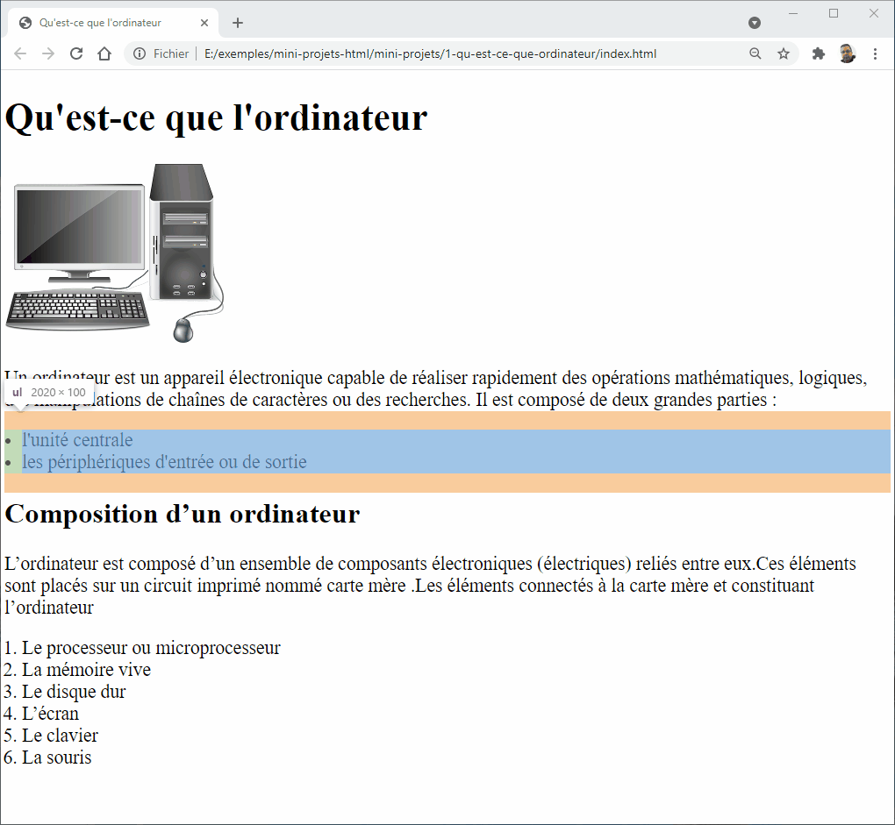
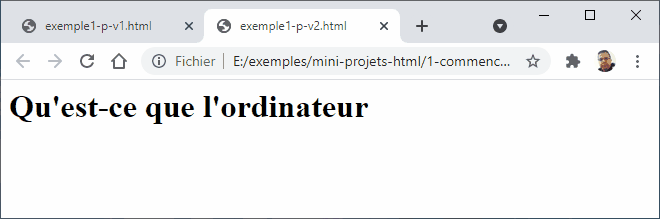
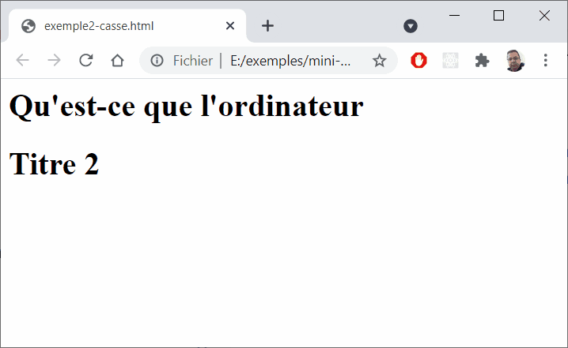
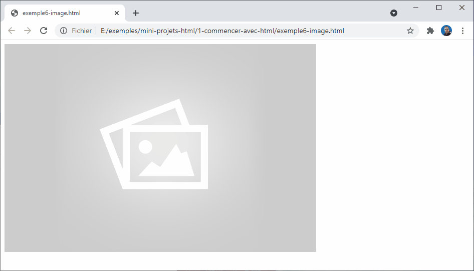
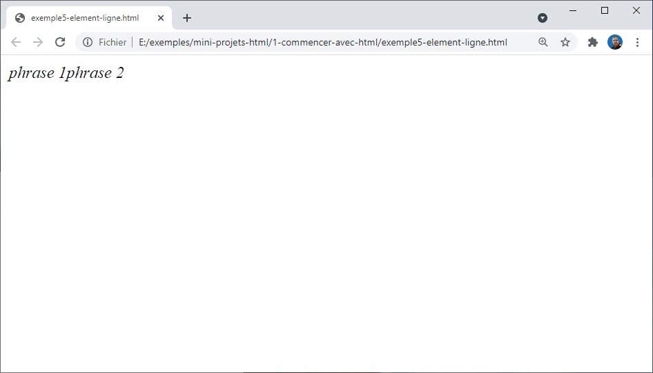
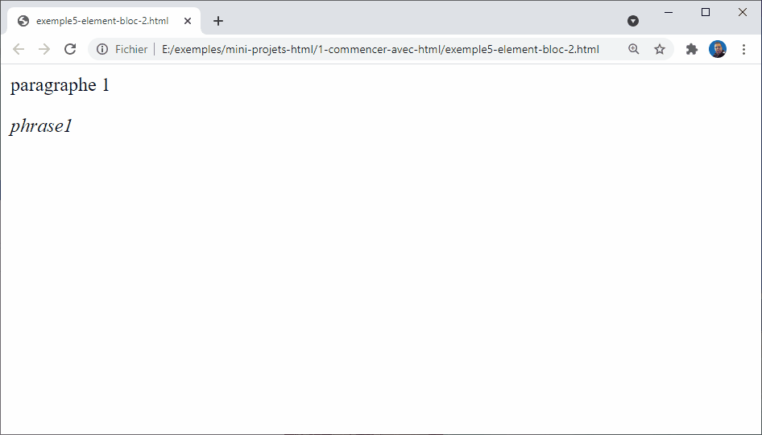
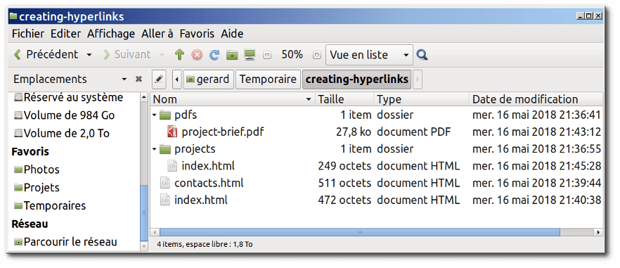

Initiation à de HTML5 et CSS3
Bienvenue dans cette formation d'initiation à la création des sites web avec HTML5 et CSS3.
La formation a pour but de fournir aux développeurs web débutants tout ce qu'ils ont besoin pour commencer à développer des sites web simples.

Si vous débutez complètement, le développement web peut être un réel défi. Notre but est de simplifier suffisamment le sujet pour que vous appreniez facilement, tout en vous fournissant assez de détails pour que vous soyez autonome.
Vous devriez vous sentir chez vous, que vous soyez
- un étudiant apprenant le développement web,
- un enseignant recherchant des supports de cours,
- un amateur ou quelqu'un qui souhaite simplement comprendre la manière dont fonctionnent le Web et ses technologies.
Ce que vous apprendrez
- Apprendre HTML5 à partir de zéro
- Apprendre CSS3 à partir de zéro
- Réalisation des projets du monde réel
- Création des pages responsive
Plan de la formation
La formation est diviser en cinq sections.
- Notion préliminaire
- Bien démarrer
- Les fondamentaux de HTML
- Les fondamentaux de CSS
- Réalisation de 6 mini-projets
Notion préliminaire
Dans la première section nommée notion préliminaire nous allons apprendre les notions d'internet et de web, puis nous allons découvrir les trois langages web : HTML5, CSS3 et JavaScript. Nous clôturerons la section par l'installation et découvert des outils dont nous avons besoin dans notre formation. La section comprend deux parties :
- Introduction au développement Web
- Installation des outils
Bien démarrer
L'apprentissage d'un langage informatique comprend plusieurs détails, qui rend l'apprenant incapable de suivre et apprendre les notions étudiées. C'est pour cette raison, j'aimerais commencer mes formations par la partie Bien démarrer qui nous donne juste l'essentiel pour apprendre comment ça marche la technique informatique. Ensuite, nous entamons les parties suivantes pour enrichir nos savoirs et compétences.
La section comprend deux parties :
- Bien démarrer avec HTML
- Bien démarrer avec CSS
Les fondamentaux de HTML
Dans la troisième section nous allons voir les fondamentaux de HTML comme par exemple la structuration d'un texte avec des liens et des images, la structuration d'un formulaire de saisie et la présentation des données sous forme d'un tableau. Nous terminerons la section par découvrir la sémantique des balises HTML.
La section comprend les parties suivantes :
- Notions de base de HTML
- Texte en HTML
- Lien et image
- Formulaire
- Tableaux
- Sémantique des balises HTML
Les fondamentaux de CSS
Dans la quatrième section nommée Les fondamentaux de CSS nous allons voir les parties suivantes :
- Notions de base de CSS
- Syntaxe : Modèle de boîte
- Syntaxe : Sélecteurs en CSS
- Positionnement avec Floats
- Positionnement avec Flexbox
- Positionnement avancé
- Responsive design
- Web typography
Réalisation de 6 mini-projets
Finalement, dans la cinquième partie nous allons réaliser les 6 mini-projets suivants :
- Mini-projet : Menu de navigation
- Mini-projet : Grid
- Mini-projet : Article d'un blog
- Mini-projet : Blog
- Mini-projet : Formulaire de contact
- Mini-projet : Page d'accueil
- Création d'un site web
Introduction au développement web
Dans cette partie de formation, nous allons
- découvrir ce que c'est qu'une page web et la notion d'internet et web.
- Ensuit, vous allez découvrir les trois langages web ( HTML, CSS et JavaScript) qui nous permet de construire une page web.
- Nous terminerons par voir l'importance d'apprentissage des langages web par rapport le développement web et les frameworks web.
Qu'est ce qu'Internet ?
Dans cette session, nous découvrons ce qu'est l'Internet et comment il fonctionne.
Extrait de la formation vidéo
Définition
L'Internet est l'épine dorsale du Web. Il s'agit de l'infrastructure technique qui soutient le Web.

De façon simple, l'Internet est un vaste réseau d'ordinateurs qui communiquent les uns avec les autres.

Comment fonctionne internet ?

Pour répondre à cette question, je vous propose de voir d'abord le fonctionnement d'un réseau entre deux ordinateurs, puis un réseau entre dix ordinateurs jusqu'à voir un réseaux entre les villes et les pays.
Réseau local : entre deux ordinateurs
Pour que deux ordinateurs puissent communiquer entre eux, ils doivent être liés soit par un lien physique (généralement par un câble Ethernet), soit par un lien sans fil (par exemple, via le WiFi). Tous ces types de connexions sont possibles sur les ordinateurs modernes.
Cette connexion entre deux ordinateurs s'appelle réseau local.

Réseau entre plusieurs ordinateurs
Un réseau n'est pas limité à deux ordinateurs. Vous pouvez y connecter autant d'ordinateurs que vous souhaitez, mais le tout se complique très rapidement. Ainsi, si vous voulez relier, disons, dix ordinateurs entre eux, vous aurez besoin de neuf prises sur chaque ordinateur et de 45 câbles !

Réseau entre plusieurs ordinateurs avec routeur
Afin de résoudre ce problème, chaque ordinateur du réseau est relié à un petit ordinateur bien spécial que l'on appelle routeur.
Ce routeur n'a qu'une seule fonction : tout comme un signaleur de gare de train, il s'assure que les messages transmis par un ordinateur donné se rendent au bon ordinateur destinataire. Ainsi, pour envoyer un message à l'ordinateur B, l'ordinateur A transmet d'abord le message au routeur, qui s'assure alors de transférer le message à l'ordinateur B et non à l'ordinateur C.
Vous voyez donc que lorsque nous ajoutons un routeur dans notre structure, notre réseau de dix ordinateurs ne requiert alors que de dix câbles, d'une prise par ordinateur et d'un routeur de 10 ports.
Un réseau de réseaux
Jusqu'ici tout est beau, mais comment fait-on pour relier des centaines, des milliers ou même des millards d'ordinateurs entre eux ? Bien évidemment, un seul routeur ne pourrait suffire pour tant de connexions. Cependant, si vous m'avez suivi attentivement, vous aurez constaté qu'un routeur n'est en réalité qu'un ordinateur. Serait-il alors possible de lier deux routeurs ? Oui, absolument, et en voici le résultat!

En liant les ordinateurs à des routeurs, puis les routeurs entre eux, nous avons la capacité d'étendre le réseau indéfiniment.

Un réseau de réseaux avec fournisseur d'accès
Un tel réseau s'apparente de près à ce que nous appelons l'Internet, mais il y a un élément manquant. Ce réseau a été conçu pour répondre à nos besoins personnels, mais d'autres réseaux existent également. Vos amis, vos voisins et plein d'autres gens peuvent avoir leurs propres réseaux d'ordinateurs. Cependant, il vous est plutôt impossible de brancher des câbles entre votre maison et le reste de la planète, alors que faire ?
Eh bien, il se trouve que votre maison est déjà câblée et liée aux réseaux téléphonique. L'infrastructure téléphonique, qui lie déjà votre maison au reste de la planète, répond parfaitement à nos besoins. Afin de lier notre réseau à l'infrastructure téléphonique, nous devons utiliser un appareil spécialisé appelé modem. Ce modem convertit l'information de notre réseau en information décodable par l'infrastructure téléphonique et vice-versa.

Un réseau de réseaux avec fournisseur d'accès
Notre réseau est donc lié à l'infrastructure téléphonique. La prochaine étape consiste alors à transmettre avec succès nos messages au réseau cible. À cette fin, nous allons lier notre réseau à un Fournisseur d'accès à Internet (FAI).
Un FAI est une entreprise qui gère des routeurs qui sont liés entre eux et qui ont des droits d'accès aux routeurs d'autres FAI. Le message transmis par notre réseau est ainsi transporté à travers le réseau de FAI afin d'atteindre le réseau cible.
Voilà en quoi consiste l'Internet : il s'agit de toute cette infrastructure de réseaux

Localiser un ordinateur
Lorsque nous souhaitons transmettre un message à un ordinateur, nous devons préciser de quel ordinateur il s'agit. Par conséquent, chaque ordinateur lié à un réseau possède une adresse unique appelée « adresse IP » (où « IP » signifie Internet Protocol) qui sert à localiser l'ordinateur. Cette adresse est composée d'une série de nombres séparés par des points, par exemple : 192.168.1.3.
C'est une méthode très efficace pour les ordinateurs, mais les humains ont un peu plus de difficulté à retenir de telles adresses numériques. Afin de se faciliter la tâche, un libellé alphabétique, appelé nom de domaine, est souvent associé aux adresses IP. Par example, google.com est le nom de domaine associé à l'adresse IP 173.194.121.32. L'utilisation d'un nom de domaine est ainsi le moyen le plus facile d'atteindre un ordinateur via l'Internet.

L'Internet et le web

Vous aurez peut-être constaté que lorsque nous naviguons sur le Web avec un navigateur Web, nous utilisons un nom de domaine pour rejoindre un site web. Est-ce donc dire qu'Internet et Web réfèrent à une seule et même notion ? La réponse n'est pas si simple. Comme nous l'avons vu, l'Internet est une infrastructure technique qui lie des milliards d'ordinateurs entre eux. Parmi ces ordinateurs, certains ordinateurs (appelés serveurs Web) peuvent transmettre des messages décodables par les navigateurs Web. Ainsi, l'Internet est une infrastructure, alors que le Web est un service installer sur un serveur en utilisant l'infrastructure de l'Internet.
Références
Le fonctionnement de l'Internet
How the Internet Works in 5 Minutes
Fonctionnement du Web
Références
Différence entre page web et site web
Références
Quelle différence entre une page web, un site web, un serveur web et un moteur de recherche ?
Langages Web : HTML, CSS et Javascript

Démonstration d'une page avec HTML et CSS
Références
Quelle est la différence entre HTML, CSS et JavaScript
Différence entre HTML, CSS et JavaScript
Quelle est la différence entre HTML, CSS et JavaScript ?
Résumé
Dans cette partie de formation, nous avons vue comment fonctionne une page web dans l'internet et le web. Nous avons découvert les trois langage web HTML, CSS et JavaScript qui nous créer un site web professionnelle.
Dans la partie suivante, nous allons découvrir et installer les outils que nous avons besoin dans la formation.
Installation des outils
Dans cette partie de formation, je vais vous montrer les outils dont vous aurez besoin pour développer un site web simple.
Je vais vous proposer le minimum à installer :
- un éditeur de texte : Visual Studio Code
- un navigateurs web modernes : Google Chrome
Les objectifs de cette partie sont :
- Installation des outils de base,
- Apprendre à utiliser visual studio code

Navigateur moderne - google Chrome
Installation d'un navigateur moderne
Il existe plusieurs navigateur moderne que nous pouvons utiliser dans notre développement à savoir Firefox et Chrome.
Je vous conseille d'utiliser Google Chrome.

Pratique - Installation de Google Chrome

Lien d'installation de Google Chrome
Références
Installation des outils de base
Éditeur de code - visual studio Code
Installation d'un éditeur de texte
Vous avez probablement un éditeur de texte basique sur votre ordinateur. Par défaut Windows propose Bloc-note.
Pour le développement web, vous trouverez surement mieux que Bloc-note. Je vous recommande de commencer avec Visual Studio Code, qui est un éditeur libre offrant des aperçus en direct et des conseils de code.
Pratique - Installation d'un éditeur de texte
Références
Installation des outils de base
Résumé
Je vous ai montrer dans cette partie de formation la navigateur et l'éditeur de code que nous allons utiliser durant notre formation.
Dans la partie Bien utiliser les outils qui vient après la section bien démarrer, je vous montrerai comment utiliser vos outils de façons plus efficaces.
Bien démarrer avec HTML
Les objectifs de cette partie sont :
Qu'est ce que le HTML ?
HTML (HyperText Markup Language) n'est pas un langage de programmation : c'est un langage de balisage qui sert à indiquer au navigateur comment structurer et afficher une page web visitée.

Le HTML se compose d'une série d'éléments avec lesquels vous pouvez encadrer, envelopper ou baliser différentes parties du contenu pour les faire apparaître ou agir d'une certaine manière.

Par exemple, dans la page web d'exemple, nous avons envelopper ou baliser le texte qui décrire les deux parties d'un ordinateur par une balise qui indique au navigateur de les afficher comme une liste.
Une balise encadrante peut transformer une petite partie de contenu en liste ordonnée, mettre des mots en gras, etc.

Exemple d'une balise
Par exemple, prenons la phrase suivante :
Qu'est-ce que l'ordinateur

Si nous voulons que cette ligne se présente comme un titre d'un article, nous pouvons dire qu'il s'agit d'un titre de niveau 1 en l'enveloppant d'un élément de titre de niveau 1 ( <h1> ) :
<h1>Qu'est-ce que l'ordinateur</h1>

Pratique - élément : h1

Les éléments HTML sont insensibles à la casse
Les éléments en HTML sont insensibles à la casse, c'est-à-dire qu'ils peuvent être écrits en majuscules ou en minuscules.
Par exemple
<h1>Qu'est-ce que l'ordinateur</h1>
<H1>Titre 2 </H1>

un élément <h1> peut être écrit <h1> ou <H1>. et il fonctionnera parfaitement. La meilleure pratique, cependant, est d'écrire tous les éléments en minuscules pour des raisons de cohérence et de lisibilité.
Pratique - insensibilité à la casse
Références
Anatomie d'un élément HTML
Les objectifs de cette session de formation sont les suivants :
- Découvrir les différents parties d'un élément HTML,
- Comprendre le rôle d'un attribut pour un élément HTML
- Apprendre à utiliser les attributs dans un élément HTML
- Apprendre à imbriquer un élément dans un autre élément,
- Découvrir ce que c'est un élément vide.
Regardons notre élément paragraphe d'un peu plus près :

Constatez qu'il est composé de trois parties :
- La balise ouvrante : il s'agit du nom de l'élément (dans ce cas, p), encadré par un chevron ouvrant (<) et un chevron fermant (>). Elle indique où l'élément commence ;
- La balise fermante : c'est la même que la balise ouvrante, sauf qu'elle comprend une barre oblique (/) avant le nom de l'élément. Elle indique la fin de l'élément ;
- Le contenu : il s'agit du contenu de l'élément. Dans notre cas, c'est le texte : "Un ordinateur est un appareil électronique" ;
Pratique - Création d'un élément HTML
Attributs
Les éléments peuvent aussi avoir des attributs, qui comme suit:
<p id="définition" >Un ordinateur est un appareil électronique</p>

Les attributs contiennent des informations supplémentaires sur l'élément sans qu'elles n'apparaissent dans le contenu réel. Dans ce cas, l'attribut id vous permet de donner à l'élément un nom d'identification qui peut ensuite être utilisé pour cibler l'élément afin de lui attribuer un style d'affichage en utilisant le code CSS par exemple.
Pour créer un attribut, il faut :
- insérer un espace entre cet attribut et le nom de l'élément ;
- donner un nom à l'attribut, puis ajouter le signe égal ;
- donner une valeur à l'attribut, entourée par des guillemets d'ouverture et de fermeture.
Éléments vides
Tous les éléments ne suivent pas le modèle ci-dessus d'ouverture de balise, puis contenu, puis fermeture de balise. Certains éléments ne sont composés que d'une balise. Ils servent généralement à insérer / incorporer quelque chose dans le document à l'endroit où ils sont mis. Par exemple, l'élément <img /> ou <img> insère une image dans une page à l'endroit où il est placé (la balise auto-fermante <img /> est à privilégier) :
<img src="image.png" />

Pratiquement la barre oblique peuvent ne pas être utiliser, dans une balise vide, dans notre exemple, l'image va s'afficher correctement sans la base oblique, mais la syntaxe de la balise auto-fermante est privilégiée.
<img src="image.png" >
Pratique - Éléments vides
Exemple d'un élément HTML : input
Avant de continuer notre anatomie d'un élément HTML, je vous propose de découvrir un nouveau élément qui s'appelle input. Il vous permet d'insérer une zone de saisie de texte dans votre document HTML.
Nous allons utiliser deux parmis ces attributs : le première s'appelle type qui précise la nature de la zone de saisie, dons notre cas text qui indiquer la saisie de texte. Le deuxième attribut s'appelle disabled, qui vous permet de désactiver la saisie de texte.
<input type="text" />
<input type="text" disabled="disabled" />

Les attributs booléens
Vous verrez parfois des attributs sans valeur définie : c'est tout à fait autorisé. Ils sont appelés attributs booléens ; ils ne peuvent avoir qu'une seule valeur, généralement la même que le nom de l'attribut. Par exemple, l'attribut disabled peut s'écrit sans valeur. dans ce cas il prend la valeur par défaut qui généralement le non de l'attribut.
<input type="text" />
<input type="text" disabled />
Exemple d'élément : attribut placeholder
Dans la partie suivante, nous allons voir l'attribut placeholder de l'élément input qui permet d'afficher des informations sur la valeur à saisir dans la zone de texte.
Par exemple, nous avons afficher à l'utilisation une information sur la valeur qu'il peut saisir dans la zone de saisie. Nous avons lui demander de saisir son prénom en.
<input type="text" placeholder="Votre prénom" >

Omettre des guillemets autour d'attribut
Si vous regardez ce qui se passe sur le Web, vous rencontrerez tous types de styles de balises étranges, y compris des valeurs d'attribut sans guillemets. C'est permis dans certaines circonstances, mais cela va briser votre balisage dans d'autres.
Par exemple, si nous voyons notre exemple, nous pourrons écrire la valeur de l'attribut type sans guillemets et ça va s'exécuter correctement dans le navigateur.
<input type=text placeholder="Votre prénom" >
Cependant, si nous ajoutons l'attribut placeholder dans ce même style, c'est à dir sans les guillemets, cela devient incorrect :
<input type=text placeholder="Nom" >
<input type=text placeholder=Votre prénom >

En effet, le navigateur interprétera mal la balise, pensant que l'attribut placeholder est en fait deux attributs — un attribut placeholder avec la valeur « Votre » et deuxième attributs booléens, « prénom ». Ce n'est évidemment pas ce qui était prévu et cela provoquera des erreurs ou un comportement inattendu dans le code, comme on le voit dans l'exemple.
Nous vous recommandons de toujours inclure les guillemets afin d'éviter ce type de problèmes, mais aussi pour que le code soit plus lisible.
Guillemets simples ou doubles ?
Dans cette session de formation, vous remarquerez que les valeurs des attributs sont toutes entre des guillemets doubles (" "). Vous pouvez cependant voir des guillemets simples (' ') dans le code HTML de certaines personnes. C'est purement une question de style, et vous êtes libre de choisir la solution que vous préférez. Les deux balise suivantes sont équivalentes :
<input type="text" placeholder="Votre nom" >
<input type="text" placeholder='Votre nom' >

Vous devez cependant vous assurer de ne pas les mélanger. Ce qui suit n'est pas correct :
<input type="text" placeholder="Votre nom' >
<input type="text" placeholder='Votre nom' >

Eléments imbriqués
Vous pouvez mettre des éléments à l'intérieur d'autres éléments — cela s'appelle l'imbrication. Si vous voulez mettre en valeur le texte "éléctronique" vous pouvez le mettre dans l'élément <strong>, pour qu'il soit fortement mis en valeur :
<p>Un ordinateur est un appareil <strong>électronique</strong></p>

Vous devez toutefois vous assurer que vos éléments sont correctement imbriqués : dans l'exemple ci-dessus, nous avons ouvert l'élément p en premier, puis l'élément strong, donc nous devons fermer l'élément strong d'abord, puis l'élément p. Ce qui suit est incorrect :
<p>Un ordinateur est un appareil <strong>électronique</p></strong>
Les éléments doivent être ouverts et fermés correctement afin d'être clairement à l'intérieur ou à l'extérieur l'un de l'autre. Si les balises se chevauchent comme dans l'exemple ci-dessus, votre navigateur web essaiera de deviner ce que vous vouliez dire, et vous pourrez obtenir des résultats inattendus.
Conclusion
Voilà tous pour cette session de formation. Nous avons vu les trois composant d'un élément HTML
Références
Les bases du HTML Commencer avec le HTML
Quelques balises pour commencer
Titre
Paragraphe
Liste
Images
Références
Document HTML valide
Les éléments HTML basiques ne sont pas très utiles si on les prend séparément. Nous allons voir comment combiner des éléments individuels pour former une page HTML entière
<!DOCTYPE html>
<html>
<head>
<meta charset="utf-8">
<title>Ma page test</title>
</head>
<body>
<p>Voici ma page web</p>
</body>
</html>
Ici, nous avons :
<!DOCTYPE html>: le type de document. Quand HTML était jeune (vers 1991/2), les doctypes étaient censés agir comme des liens vers un ensemble de règles que la page HTML devait suivre pour être considérée comme un bon HTML, ce qui pouvait signifier la vérification automatique des erreurs et d'autres choses utiles. Habituellement, ils ressemblaient à ceci :
<!DOCTYPE html PUBLIC "-//W3C//DTD XHTML 1.0 Transitional//EN"
"http://www.w3.org/TR/xhtml1/DTD/xhtml1-transitional.dtd">
Cependant, de nos jours personne ne se soucie vraiment d'eux, et ils sont juste un artefact historique qui doit être inclus pour que tout fonctionne bien. <!DOCTYPE html> est la chaîne de caractères la plus courte qui soit un doctype valide. C'est tout ce que vous avez vraiment besoin de savoir.
<html></html>: l'élément<html>. Cet élément est le contenant de tout le code de la page et il est parfois connu comme l'élément racine.<head></head>: l'élément<head>. Cet élément a le rôle de conteneur pour toute chose que vous souhaitez inclure dans la page HTML qui ne soit pas du contenu à afficher aux visiteurs de la page : mots clés, description de page que vous souhaitez voir apparaître dans les résultats de recherche, style CSS, déclarations de jeu de caractères et plus encore. Je vous en dis plus à ce sujet dans les sessions suivants.<meta charset="utf-8">: cet élément définit que le jeu de caractères à utiliser pour votre document qui est UTF-8. Ce jeu comporte la quasi‑totalité des caractères de toutes les écritures de langues humaines connues. Actuellement, il peut pour l'essentiel gérer tout contenu textuel que vous y pourriez mettre. Il n'y a aucune raison de ne pas définir cela et il peut permettre d'éviter certains problèmes plus tard.<title></title>: l'élément title. Il définit le titre de la page, celui qui s'affiche dans l'onglet du navigateur dans lequel la page est chargée et qui est utilisé pour décrire la page lorsque vous la marquez ou l'ajoutez aux favoris.<body></body>: l'élément<body>. Il contient tout le contenu que vous souhaitez afficher aux internautes lorsqu'ils visitent votre page, que ce soit du texte, des images, des vidéo ou autre.
Pratique - Création d'un document html valide
Conclusion
Nous avons vu comment créer un document html valide. Il contient l'élément racine html, l'élément head contenant les métas informations de notre document, et l'élément body qui contient le contenue visuel de la page.
<!DOCTYPE html>
<html>
<head>
<meta charset="utf-8">
<title>Ma page test</title>
</head>
<body>
<p>Voici ma page web</p>
</body>
</html>
Références
TP - Exemple d'une page HTMl
TP - Inspecteur de code HTML
Résumé
Introduction
Références
Qu'est-ce que le CSS?
Références
Règle CSS
Références
Quelques notions pour commencer
Les polices (fontes) et le texte
Boîtes, boîtes, encore et toujours des boîtes
Références
Exemple d'une page HTMl avec CSS
Résumé
TP - Premier pas avec Visual Studio Code
Références
Learn to code with Visual Studio Code
Coder plus vite avec Visual Studio Code
Dans cette vidéo je te montre quelques raccourcis clavier super utiles pour coder plus vite avec Visual Studio Code.
Références
Coder plus vite avec Visual Studio Code
TP - Inspecteur de code HTML
Les base de HTML
Dans cette partie de formation, Nous allons voir les fondements du HTML, pour prendre un bon départ d'apprentissage.
Nous allons commencer par définir : c'est quoi un élément et ces attributs et tout autre terme important que vous avez peut‑être entendu. Ensuite, je vais vous montrer comment un élément HTML est structuré et comment une page HTML est structurée.
Les objectifs de cette partie sont :
- Se familiariser avec le langage HTM
- acquérir de la pratique en écrivant quelques éléments HTML.
Élément bloc et enligne
Les objectifs de cette session de formation sont les suivants :
- Comprendre la différence entre un élément bloc et en line,
- Apprendre à utiliser ces deux type d'éléments.
Éléments bloc vs en ligne
Il existe deux catégories importantes d'éléments en HTML que vous devez connaître : les éléments de niveau bloc et les éléments en ligne.


Éléments bloc
Les éléments de niveau bloc forment un bloc visible sur une page — ils apparaissent sur une nouvelle ligne quel que soit le contenu précédant et tout contenu qui les suit apparaît également sur une nouvelle ligne.
<p>paragraphe 1</p><p>paragraphe 2</p>
<p>paragraphe 1</p><em>phrase1</em>

Les éléments de niveau de bloc sont souvent des éléments structurels de la page et représentent, par exemple, des paragraphes, des listes, des menus de navigation, des pieds de page, etc.
Éléments en ligne
Les éléments en ligne entourent seulement des petites parties du contenu du document et il n'entroune par un element bloc. Un élément en ligne ne fait pas apparaître une nouvelle ligne dans le document.
Prenez l'exemple suivant :
<em>phrase 1</em><em>phrase 2</em>
<em> est un élément en ligne et, comme vous pouvez le voir ci-dessous, les éléments s'affichent sur la même ligne sans qu'il n'y ait d'espace entre eux.
Conclusion
Voilà tous, pour cette session de formation. Je vous ai montrer la différence entre un élément de type bloc et en ligne.
Métadonnées en HTML
L'en-tête head dans un document HTML est une partie du document qui n'est pas affichée par le navigateur au chargement de la page. Elle contient des informations comme le titre (<title>) de la page, des liens aux CSS (si vous souhaitez composer le contenu HTML avec des CSS), des liens aux favicons personnalisés et d'autres méta-données (auteur du document, mots-clés décrivant le document, etc.).
Cette session porte sur tout ceci et plus, pour vous donner de bonnes bases pour gérer les balises et le code qui devraient figurer dans l'en-tête de la page.
Objectifs
Les objectifs sont les suivant :
- En savoir plus sur la balise du HTML,
- son objet,
- les éléments les plus importants qu'elle peut contenir
- et l'effet qu'elle peut avoir sur le document HTML.
Qu'est-ce que l'en-tête de HTML ?
Revoyons le document HTML de notre exemple :
<!DOCTYPE html>
<html>
<head>
<meta charset="utf-8">
<title>Ma page test</title>
</head>
<body>
<p>Voici ma page</p>
</body>
</html>
Le contenu de l'en-tête HTML <head> — à la difference du contenu de l'élément <body> (affiché quand la page est chargée par le navigateur) — n'est pas affiché dans la page du navigateur. Le travail de la balise <head> est de contenir les métadonnées à propos du document. Dans notre exemple l'en-tête est plutôt petit :
<head>
<meta charset="utf-8">
<title>Ma page test</title>
</head>
Toutefois dans les pages plus importantes, l'en-tête peut contenir un grand nombre d'éléments — essayez d'aller sur certains de vos sites web préférés et utilisez les outils de développement pour vérifier le contenu de l'en-tête. Mon objectif ici n'est pas de vous montrer comment utiliser tout ce qui peut être mis dans l'élément <head>, mais plutôt de vous apprendre à utiliser les outils les plus évidents, que vous souhaiterez inclure dans l'en-tête, et vous les rendre plus familiers. Commençons.
Ajouter un titre
Nous avons déjà vu l'élément <title> — qui peut être utilisé pour ajouter un intitulé au document. Il peut toutefois être confondu avec l'élément <h1>, pour ajouter un en‑tête de haut niveau au contenu de votre page dans l'élément <body> — quelquefois désigné comme étant le « titre de la page ». Mais ce sont des choses différentes !
<!DOCTYPE html>
<html>
<head>
<meta charset="utf-8">
<title>Ma page de test</title>
</head>
<body>
<h1>Element h1</h1>
</body>
</html>
- L'élément
<h1>apparaît dans la page quand elle est chargée dans le navigateur — généralement, il devrait être utilisé une fois par page, pour marquer le titre du contenu de votre page (le titre d'une histoire, ou d'une actualité, ou tout ce qui vous paraît approprié). - L'élément
<title>est une métadonnée qui représente l'intitulé du document HTML global (non le contenu du document).
Pratique - Ajouter un titre

<!DOCTYPE html>
<html>
<head>
<meta charset="utf-8">
<title>Ma page de test</title>
</head>
<body>
<h1>Element h1</h1>
</body>
</html>
Le contenu de l'élément <title> est aussi utilisé de manières différentes . Par exemple, si vous tentez de marquer cette page dans vos Marques-pages ( Marques-pages > Marquer cette page ou bien l'étoile dans la barre d'outils de Firefox), vous verrez que le contenu de <title> est suggéré comme nom pour le marque-page.
Le contenu de <title> est aussi utilisé dans les résultats de recherches, comme vous le verrez ci‑dessous
Métadonnées : l'élément meta
Les métadonnées sont des données qui décrivent des données, et le langage HTML a une manière « officielle » d'ajouter des métadonnées à un document — l'élément <meta>. Bien sûr, d'autres choses, dont nous parlons dans cette session, pourraient aussi être considérées comme des métadonnées. Il y a une panoplie d'autres éléments de type <meta> qui auraient pu figurer dans l'en-tête de votre page, mais nous n'en parlerons pas pour l'instant, car ce serait trop déroutant. À la place, nous expliquerons quelques éléments que vous pourriez voir, juste pour vous donner une idée.
Définition de l'encodage des caractères du document
Dans l'exemple que nous avons vu, cette ligne était présente :
<meta charset="utf-8">
Cet élément définit l'encodage des caractères du document - le jeu de caractères qu'il est autorisé à utiliser. utf-8 est un jeu de caractères universel qui inclut à peu près tous les caractères des langues humaines. Cela signifie que votre page web sera capable de gérer l'affichage de n'importe quelle langue ; c'est donc une bonne idée de le définir dans chaque page web que vous créez ! Par exemple, votre page peut gérer le français et le l'arabe sans aucun souci :
<!DOCTYPE html>
<html>
<head>
<meta charset="utf-8">
<title>C'est quoi un ordinateur</title>
</head>
<body>
<h1>Ordinateur</h1>
<p>En français : ordinateur</p>
<p>En arabe : حاسوب</p>
</body>
</html>

Note : Certains navigateurs (par ex. Chrome) corrigent automatiquement les encodages incorrects, ainsi selon le navigateur utilisé, ce problème pourrait vous passer totalement inaperçu. Vous devriez quand même définir un encodage utf-8 sur votre page de toutes façons pour éviter tout problème potentiel avec d'autres navigateurs.
Si vous définissez votre encodage de caractères en ISO-8859-1 , par exemple (le jeu de caractères de l'alphabet latin), le rendu de votre page sera totalement perturbé :

Pratique - encodage des caractères
Ajouter le nom de l'auteur et une description
De nombreux éléments <meta> contiennent les attributs name et content :
- name définit le type de méta élément ; le type d'informations contenu.
- content définit le contenu réel de la métadonnée.
Il est utile d'inclure ces deux méta-éléments dans votre page pour définir son auteur et donner une courte description de son contenu. Voyons un exemple :
<!DOCTYPE html>
<html>
<head>
<meta charset="UTF-8">
<title>Informatique</title>
<meta name="author" content="ESSARRAJ Fouad">
<meta name="description" content="Introduction à l'informatique.">
</head>
<body>
</body>
</html>
Préciser l'auteur peut être intéressant dans certains cas : il est utile de savoir qui a écrit la page pour le contacter et lui poser des questions à propos du contenu.
Définir une description qui incorpore des mots-clés relatifs au contenu de la page est utile ; votre page pourra ainsi apparaître plus haut dans la liste de recherches par pertinence créée par un moteur de recherche (ce processus se nomme Search Engine Optimization ou SEO — optimisation du moteur de recherche.)
Pratique - encodage des caractères
- voir l'impact du l'insertion d'un élément meta de type description, dans les résultats de recherche sur google.com
Ajouter des icônes personnalisées à un site
Pour enrichir davantage le design de votre site, vous pouvez ajouter des références à des icônes personnalisées dans vos métadonnées et celles-ci seront affichées dans certains contextes.
La petite favicône, qui existe depuis de nombreuses années, a été la première icône de ce type, une icône de 16 x 16 pixels utilisée dans de multiples endroits. Vous verrez des favicônes affichés dans chaque onglet du navigateur pour chaque page ouverte et à côté des pages marquées dans le panneau des signets.
Une favicône peut être ajoutée à votre page de la façon suivante :
- Enregistrez-la dans le même répertoire que la page d'index du site, sous le format .ico (la plupart des navigateurs prendront en charge les favicônes dans des formats plus communs comme .gif ou .png, mais utiliser le format ICO assurera son fonctionnement depuis Internet Explorer 6.)
- Ajoutez la ligne suivante dans votre
<head>du HTML pour la référencer
<link rel="shortcut icon" href="favicon.ico" type="image/x-icon">
Voici un exemple de favicône dans un panneau de favoris :
Définition de la langue principale du document
Enfin, il convient de mentionner que vous pouvez (et devrez vraiment) définir la langue de votre page. Cela peut être fait en ajoutant l'attribut lang à la balise ouvrante HTML.
<html lang="fr">
Ceci est utile de plusieurs façons. Votre document sera indexé plus efficacement par les moteurs de recherche si son langage est défini (ce qui lui permet d'apparaître correctement dans les résultats spécifiques à la langue, par exemple).
Résumé
Cela marque la fin de notre tour rapide de l'en-tête HTML — il y a beaucoup plus de possibilités ici, mais un panorama exhaustif serait ennuyeux et susceptible de vous embrouiller à ce stade, nous voulions simplement vous donner une idée des éléments les plus courants. Dans la session suivant, nous allons étudier ...
Commentaires en HTML
En HTML, comme pour la plupart des langages de programmation, il existe un mécanisme permettant d'écrire des commentaires dans le code. Les commentaires sont ignorés par le navigateur et invisibles à l'utilisateur. Leur but est de permettre d'inclure des commentaires dans le code pour dire comment il fonctionne, que font les diverses parties du code, etc. Cela peut s'avérer très utile si vous revenez à un codage que vous n'avez pas travaillé depuis 6 mois et que vous ne pouvez pas vous rappeler ce que vous avez fait — ou si vous donnez votre code à quelqu'un d'autre pour qu'il y travaille.
Pour transformer une section de contenu dans votre fichier HTML en commentaire, vous devez la mettre dans les marqueurs spéciaux <!-- et-->, par exemple :
<p>Je ne suis pas dans un commentaire</p>
<!-- <p>Je suis dans un commmentaire!</p> -->
Comme vous pouvez le voir ci-dessous, le premier paragraphe apparaît dans le rendu de l'éditeur en ligne, mais le second n'apparaît pas.

Résumé
Vous avez atteint la fin de cette partie. J'espére que vous avez apprécié de faire le tour des bases du HTML !
À ce stade, vous devez comprendre à quoi ce langage ressemble, comment il fonctionne à un niveau de base, et être en mesure d'écrire quelques éléments et attributs.
C'est parfait pour le moment, car dans les sessions suivants, nous allons approfondir certaines des choses que vous venez de voir, et introduire de nouveaux aspects du langage. Restez à l'écoute !
Introduction
L'un des principaux buts de HTML est de structurer du texte et lui donner du sens (ce que l'on appelle la sémantique) afin que le navigateur puisse l'afficher correctement. Cet article explique comment HTML peut être utilisé pour structurer une page en ajoutant des titres et des paragraphes, en marquant des emphases, en créant des listes, et bien plus encore.
Objectif
Apprendre comment ajouter des balises dans une page de texte simple pour la structurer et lui donner du sens — en incluant
- des paragraphes,
- des titres,
- des listes,
- des emphases
- et des citations.
Les bases : titres et paragraphes
La plupart <h1> des textes structurés comprennent des titres et des paragraphes, que ce soit dans les romans, les journaux, les livres scolaires, les magazines, etc.

Le contenu structuré facilite la lecture et la rend plus agréable.
En HTML, les paragraphes doivent être contenus dans un élément <p>, comme ceci :
<p>Je suis un paragraphe.</p>
Chaque titre doit être contenu dans un élément titre :
<h1>Je suis le titre de l'article.</h1>
Il y a 6 éléments de titre — <h1>, <h2>, <h3>, <h4>, <h5>, et <h6>. Chaque élément représente un niveau de titre différent par exemple :
<h1>représente le titre principal,<h2>représente un sous-titre,<h3>représente un sous-sous-titre,- et ainsi de suite jusqu'au niveau de titre le plus bas qui correspond à
<h6>.
Implémentation de la hiérarchie structurale
Dans une histoire, la balise
représenterait le titre de l'histoire, les balises représenteraient les titres des chapitres, les balises les sous-sections des chapitres, en poursuivant ainsi jusqu'à la balise .
<h1>L'ennui mortel</h1>
<p>par Chris Mills</p>
<h2>Chapitre I : La nuit noire</h2>
<p>Il faisait nuit noire. Quelque part une chouette ululait. La pluie tombait sur ...</p>
<h2>Chapitre II : Le silence éternel</h2>
<p>Notre protagoniste ne pouvait même pas murmurer à l'ombre de la silhouette...</p>
<h3>Le spectre parle</h3>
<p>Plusieurs heures s'étaient écoulées, quand soudain le spectre assis se releva et s'exclama : « S'il vous plaît, ayez pitié de mon âme ! »...</p>
les sous-sections des chapitres, en poursuivant ainsi jusqu'à la balise .
<h1>L'ennui mortel</h1>
<p>par Chris Mills</p>
<h2>Chapitre I : La nuit noire</h2>
<p>Il faisait nuit noire. Quelque part une chouette ululait. La pluie tombait sur ...</p>
<h2>Chapitre II : Le silence éternel</h2>
<p>Notre protagoniste ne pouvait même pas murmurer à l'ombre de la silhouette...</p>
<h3>Le spectre parle</h3>
<p>Plusieurs heures s'étaient écoulées, quand soudain le spectre assis se releva et s'exclama : « S'il vous plaît, ayez pitié de mon âme ! »...</p>
<h1>L'ennui mortel</h1>
<p>par Chris Mills</p>
<h2>Chapitre I : La nuit noire</h2>
<p>Il faisait nuit noire. Quelque part une chouette ululait. La pluie tombait sur ...</p>
<h2>Chapitre II : Le silence éternel</h2>
<p>Notre protagoniste ne pouvait même pas murmurer à l'ombre de la silhouette...</p>
<h3>Le spectre parle</h3>
<p>Plusieurs heures s'étaient écoulées, quand soudain le spectre assis se releva et s'exclama : « S'il vous plaît, ayez pitié de mon âme ! »...</p>
C'est vous qui décidez ce que représentent les éléments utilisés tant que la hiérarchie a du sens. Vous devez cependant garder à l'esprit quelques bonnes pratiques lorsque vous créez de telles structures :
Il est préférable de n'utiliser qu'un seul
par page — c'est le niveau principal, et tous les autres devraient être de niveau inférieur.
Assurez-vous d'utiliser les balise de titre dans l'ordre correct et logique : puis , puis et ainsi de suite.
Bien qu'il y ait 6 niveaux de titre (de à ), Il est déconseillé d'utiliser plus de trois niveaux dans une page. Les documents avec beaucoup de niveaux deviennent complexes et difficiles à parcourir. Dans ce cas, il est préférable de partager le contenu sur plusieurs pages.
Pourquoi faut-il structurer un document ?
, puis et ainsi de suite.
Bien qu'il y ait 6 niveaux de titre (de à ), Il est déconseillé d'utiliser plus de trois niveaux dans une page. Les documents avec beaucoup de niveaux deviennent complexes et difficiles à parcourir. Dans ce cas, il est préférable de partager le contenu sur plusieurs pages.
Pourquoi faut-il structurer un document ?
à ), Il est déconseillé d'utiliser plus de trois niveaux dans une page. Les documents avec beaucoup de niveaux deviennent complexes et difficiles à parcourir. Dans ce cas, il est préférable de partager le contenu sur plusieurs pages.
Pourquoi faut-il structurer un document ?
Pourquoi faut-il structurer un document ?
Pour répondre à cette question, regardons la page text-start.html — le point de départ de l'exemple que nous allons utiliser dans cet article (une recette). Enregistrez une copie de ce fichier sur votre ordinateur car vous en aurez besoin pour les exercices qui vont suivre. Le corps de ce document contient plusieurs parties sans aucune balise ; elles sont seulement séparées par des retours chariots (obtenus en pressant la touche Entrée ou ⏎)
Cependant, si l'on ouvre ce document dans un navigateur, il sera affiché sous forme d'un gros bloc de texte !
Ceci est dû au fait qu'il n'y a aucun élément indiquant la structure du contenu, et donc le navigateur ne sait pas différencier ce qui est un titre d'un paragraphe. De plus :
- Les visiteurs d'une page web la parcourent pour trouver le contenu pertinent. Par conséquent, ils ne lisent souvent que les titres (généralement nous ne passons que très peu de temps sur une page web). S'ils ne trouvent pas le contenu souhaité en quelques secondes, ils seront probablement déçus et chercheront l'information souhaitée ailleurs.
- Les moteurs de recherche, lorsqu'ils indexent votre page, prennent en considération les titres en tant que mots‑clés ce qui influe sur le classement de la page lors d'une recherche. Sans titre, une page aura un faible référencement (SEO (Search Engine Optimization).
- Les personnes malvoyantes ne pouvant lire votre page peuvent utiliser des lecteurs d'écran. Ces logiciels permettent d'accéder rapidement à une partie du texte. Pour cela, ils lisent les titres de votre document aux utilisateurs, leur permettant ainsi de trouver rapidement l'information dont ils ont besoin. Si les titres ne sont pas disponibles, les lecteurs d'écran lisent tout le document, le rendant peu accessible aux personnes avec un handicap visuel.
- Pour composer un style de contenu avec le CSS ou réaliser des choses intéressantes avec le JavaScript, vous devez avoir des éléments enveloppant les contenus pertinents, ce qui permet ensuite de les cibler avec CSS/JavaScript.
Il est donc nécessaire d'ajouter des balises de structuration du contenu.
Pratique : structurer le contenu
Pourquoi a-t-on besoin de sémantique ?
La sémantique est utilisée partout autour de nous — on se fie à nos précédentes experiences pour savoir à quoi servent les objets du quotidien; quand on voit quelque chose, on sait à quoi cela sert. Par exemple, on s'attend à ce qu'un feu rouge de signalisation signifie « Stop » et qu'un feu vert signifie « Avancez ». Les choses peuvent vite devenir plus compliquées si de mauvaises sémantiques sont appliquées (existe-t-il un pays dans lequel un feu rouge signifie que l'on peut passer ? Je ne l'espère pas.)
Dans la même optique, il faut s'assurer que l'on utilise les bons élements et que l'on donne la bonne signification, la bonne fonction et la bonne apparence à notre contenu. Dans ce contexte, l'élément
est aussi un élement sémantique. Il donne au texte auquel il s'applique la fonction (ou la signification) de « titre principal de la page ».
<h1>Ceci est un titre principal</h1>
````html
Par défaut, le navigateur l'affiche avec une police de caractères de grande taille pour qu'il ait l'apparence d'un titre (même si vous pourriez lui donner l'apparence de n'importe quel élément avec le CSS). Plus important encore, sa valeur sémantique est utilisée de différentes manières, notamment par les moteurs de recherche ou les lecteurs d'écran (comme expliqué plus haut).
D'autre part, vous pouvez faire ressembler n'importe quel élément à un titre principal. Par exemple :
````html
<span style="font-size: 32px; margin: 21px 0;">Est-ce un titre principal?</span>
Copy to Clipboard
<h1>Ceci est un titre principal</h1>
````html
Par défaut, le navigateur l'affiche avec une police de caractères de grande taille pour qu'il ait l'apparence d'un titre (même si vous pourriez lui donner l'apparence de n'importe quel élément avec le CSS). Plus important encore, sa valeur sémantique est utilisée de différentes manières, notamment par les moteurs de recherche ou les lecteurs d'écran (comme expliqué plus haut).
D'autre part, vous pouvez faire ressembler n'importe quel élément à un titre principal. Par exemple :
````html
<span style="font-size: 32px; margin: 21px 0;">Est-ce un titre principal?</span>
Copy to Clipboard
C'est un élément . Il n'a pas de valeur sémantique. Il s'utilise autour d'un contenu auquel vous souhaitez appliquer un style CSS (ou le modifier avec du JavaScript) sans lui donner une signification supplémentaire (vous en apprendrez plus à ce propos plus loin dans ce cours). Nous lui avons appliqué du CSS pour qu'il ressemble à un titre principal, mais comme il n'a pas de valeur sémantique, il ne bénéficie d'aucune des valeurs sémantiques décrites plus haut. Il est conseillé d'utiliser des éléments HTML adaptés à leur rôle.
Listes
Intéressons-nous maintenant aux listes. Il y a des listes partout dans la vie — de la liste de courses à la liste de directions que vous suivez inconsciemment pour rentrer chez vous tous les jours, sans oublier la liste des instructions que vous suivez dans ce tutoriel ! Les listes sont aussi très répandues sur le Web, nous allons nous intéresser aux trois différents types de liste.
Listes non-ordonnées
Les listes non-ordonnées sont utilisées pour représenter des listes d'éléments pour lesquelles l'ordre n'a pas d'importance. Prenons par exemple une liste de courses :
lait
œufs
pain
Les listes non-ordonnées débutent par un élément <ul> (unorderd list) qui enveloppe tous les éléments de la liste:
<ul>
lait
œufs
pain
</ul>
Chaque item est contenu dans un élément
<ul>
<li>lait</li>
<li>œufs</li>
<li>pain</li>
<li>houmous</li>
</ul>
Pratique - liste non-ordonnées
Listes ordonnées
Les listes ordonnées permettent de représenter des listes dans lesquelles l'ordre des éléments a de l'importance — prenons par exemple une série de directions à suivre:
Roulez jusqu'au bout de la route
Tournez à droite
Allez tout droit aux deux premiers ronds-points
Tournez à gauche au troisième rond-point
Roulez sur 300 mètres, l'école est sur votre droite
Les balises suivent la même structure que pour les listes ordonnées, à cela près que la liste est contenue dans l'élément
- (ordered list), et non dans
- traiter de manière fiable les incohérences entre les navigateurs, tout en appliquant quelques valeurs par défaut de bon goût, telles que l'utilisation de la pile de polices natives pour déterminer la meilleure police pour chaque appareil, en définissant l'arrière-plan et le premier plan couleurs, ainsi que la taille du texte à 16pxet sa hauteur de ligne à 1.5.
- Normalize.css v7.0.0
- :
<ol>
<li>Roulez jusqu'au bout de la route</li>
<li>Tournez à droite</li>
<li>Allez tout droit aux deux premiers ronds-points</li>
<li>Tournez à gauche au troisième rond-point</li>
<li>Roulez sur 300 mètres, l'école est sur votre droite</li>
</ol>
Pratique - Recette de cuisine
<h1>Recette rapide de l'houmous</h1>
<p>Cette .</p>
<p>L'houmous </p>
<h2>Ingrédients</h2>
<ul>
<li>1 boîte (400 g) de pois chiches (garbanzos)</li>
<li>175g de crème de sésame</li>
</ul>
<h2>Instructions</h2>
<ol>
<li>Ôter la peau de l'ail et le hacher grossièrement.</li>
<li>Enlever les graines et la tige du poivron, le hacher grossièrement.</li>
</ol>
<p>Pour des saveurs diqui vous va.</p>
<h2>Conservation</h2>
<p>Mete. S'il se met à fermenter, jettez‑le sans hésiter.</p>
Imbriquer des listes
Il est parfaitement possible d'imbriquer une liste dans une autre. Il se peut que vous vouliez insérer une liste à puces derrière une même puce de niveau supérieur. Prenons par exemple la deuxième liste de la recette :
<ol>
<li>Ôter la peau de l'ail et le hacher grossièrement.</li>
<li>Enlever les graines et la tige du poivron, le hacher grossièrement.</li>
<li>Mettre tous les ingrédients dans un robot mixer jusqu'à l'obtention d'une pâte.</li>
<li>Si vous voulez un houmous grenu, ne le mixez pas trop longtemps.</li>
<li>Si vous voulez un houmous lisse, mixez-le plus longtemps.</li>
</ol>
Comme les deux dernières puces de la liste sont très liées à celle qui les précède (elles semblent être des sous-instructions ou des choix correspondant à cette puce), il peut être judicieux de les regrouper dans une même liste non-ordonnée, et placer cette liste dans le quatrième item. Cela ressemblerait alors à ceci :
<ol>
<li>Ôter la peau de l'ail et le hacher grossièrement.</li>
<li>Enlever les graines et la tige du poivron, le hacher grossièrement.</li>
<li>Mettre tous les ingrédients dans un robot mixer jusqu'à l'obtention d'une pâte.
<ul>
<li>Si vous voulez un houmous grenu, ne le mixez pas trop longtemps.</li>
<li>Si vous voulez un houmous lisse, mixez-le plus longtemps.</li>
</ul>
</li>
</ol>
N'hésitez pas à revenir au dernier TP pour modifier vous même la liste correspondante dans la recette.
Soulignement et importance
Dans le langage, nous mettons souvent l'accent sur certains mots pour modifier le sens d'une phrase et pour marquer certains mots comme étant importants ou différents d'une manière ou d'une autre. HTML fournit divers éléments de sémantique pour nous permettre de marquer un contenu textuel avec de tels effets. Dans cette section, nous examinerons quelques-uns des plus courants.
Emphase
Dans le langage parlé, pour accentuer, nous insistons sur certains mots, modifiant subtilement le sens de ce que nous disons. De même, dans le langage écrit, nous avons tendance à mettre un certain accent sur des mots en les écrivant en italique. Par exemple, les deux phrases suivantes ont des significations différentes.
« Je suis content que vous n'ayez pas été en retard. »
« Je suis content que vous n'ayez pas été en retard. »
La première phrase semble indiquer que le locuteur est vraiment soulagé que la personne n'aie pas été en retard. En revanche, la seconde a une tonalité sarcastique ou passive-agressive, exprimant la gêne que la personne soit arrivée un peu en retard.
En HTML, nous utilisons l'élément <em> (emphase) pour marquer ces circonstances. Outre rendre le document plus intéressant à lire, ces marqueurs sont reconnus par les lecteurs d'écran et exprimés sur un ton de voix différent. Les navigateurs utilisent l'italique par défaut, mais il ne faut pas utiliser cette balise pour mettre en italique. Pour cela, utilisez un élément <span> et du CSS, ou plus simplement un élément <i> (voir ci-dessous).
<p>Je suis <em>content</em> que vous n'ayez pas été <em>en retard</em>.</p>
Grande importance
Pour mettre l'accent sur des mots très importants, nous les soulignons d'un ton particulier dans la langue parlée et nous les mettons en caractères gras dans la langue écrite. Par exemple :
Ce liquide est hautement toxique.
Je compte sur vous. Ne soyez pas en retard !
En HTML, nous utilisons l'élément <strong> (forte importance) comme balise de telles circonstances. En plus de rendre le document plus lisible, ces balises sont reconnues par les lecteurs d'écran et énoncées avec des intonations différentes. Par défaut, les navigateurs mettent le texte marqué en gras, mais il ne faut pas utiliser cette balise pour mettre en gras. Pour cela, utilisez un élément <span>} et du CSS, ou plus simplement un élément <b> (voir ci-dessous).
<p>Ce liquide est <strong>hautement toxique</strong>.</p>
<p>Je compte sur vous. <strong>Ne soyez pas en retard</strong> !</p>
Il est possible d'imbriquer strong et em :
<p>Ce liquide est <strong>hautement toxique</strong> —
si vous en buvez, <strong>vous pourriez en <em>mourir</em></strong>.</p>
Pratique - Emphase et importance
Italique, gras, soulignement…
Les éléments dont nous avons discuté jusqu'à présent ont une sémantique bien définie. La situation avec , et est un peu plus complexe. Ils sont apparus pour que les personnes puissent écrire du texte en gras, en italique ou souligné à une époque où le CSS était encore mal ou pas du tout pris en charge. De tels éléments, qui n'affectent que la présentation et non la sémantique, sont appelés éléments de présentation et ne devraient plus être utilisés, car comme nous l'avons vu précédemment, la sémantique a la plus grande importance pour l'accessibilité, le référencement, etc.
<!-- noms scientifiques -->
<p>
Le colibri à gorge rouge (<i>Archilochus colubris</i>)
est le colibri le plus courant dans l'ouest de l'Amérique du Nord.
</p>
<!-- mots dans une langue étrangère -->
<p>
Le menu était un océan de mots exotiques comme <i lang="uk-latn">vatrushka</i>,
<i lang="id">nasi goreng</i> et <i lang="en">porridge</i>.
</p>
<!-- une faute d'orthographe connue -->
<p>
Un jour, j'apprendrai comment mieux <u style="text-decoration-line: underline; text-decoration-style: wavy;">épeler</u>.
</p>
<!-- Mettre en évidence les mots‑clés dans un ensemble d'instructions -->
<ol>
<li>
<b>Trancher</b> deux morceaux de pain dans la miche.
</li>
<li>
<b>Mettre</b> une rondelle de tomate et une feuille de laitue
entre les deux tranches de pain.
</li>
</ol>
Espace et caractères spéciaux
Objectifs
Espace vide en HTML
Dans les exemples que nous avons vu, vous avez peut-être remarqué que beaucoup d'espaces sont inclus dans le code — ce n'est pas nécessaire du tout. Les deux extraits de code suivants sont équivalents:
<p>Les chiens sont idiots.</p>
<p>Les chiens sont
idiots.</p>
Peu importe la quantité d'espace que vous utilisez (pour inclure des espaces, ou aussi des sauts de ligne), l'analyseur HTML réduit chacun à un seul espace lors du rendu du code. Alors, pourquoi utiliser autant d'espace blanc? La réponse est la lisibilité — car il est tellement plus facile de comprendre ce qui se passe dans votre code si vous l'avez bien formaté, et non pas simplement l'écrire dans un grand désordre.
Inclure les caractères spéciaux en HTML
En HTML, les caractères <, >,",' et & sont des caractères spéciaux. Ils font partie de la syntaxe HTML elle-même, alors comment inclure un de ces caractères dans du texte, par exemple si vous voulez vraiment utiliser une esperluette(&) ou un signe inférieur(<), qui ne soit pas interpré en tant que code comme les navigateurs pourraient le faire ?
Nous devons utiliser les références des caractères — codes spéciaux qui représentent des caractères et peuvent être utilisés dans ces circonstances exactes. Chaque référence de caractère est démarrée avec une esperluette (&), et se termine par un point-virgule (;).
| Le caractère | Réference équivalent |
|---|---|
| < | < |
| > | > |
| " | " |
| ' | ' |
| & | & |
Dans l'exemple ci-dessous, voici deux paragraphes parlant de techniques Web :
<p>En HTML, un paragraphe se définit avec l'élément <p>.</p>
<p>En HTML, un paragraphe se définit avec l'élément <p>.</p>
Dans la zone de rendu en direct ci-dessous, vous pouvez voir que le premier paragraphe n'est pas correctement affiché : le navigateur interprète le second
comme le début d'un nouveau paragraphe ! Le deuxième paragraphe est bien affiché, car nous avons remplacé les signes inférieur(<) et supérieur(>) par leurs références de caractère.

Résumé
Résumé
C'est tout pour l'instant ! Cet article doit vous avoir donné une bonne idée de la façon de commencer à baliser le texte en HTML et présenté les éléments les plus importants dans ce domaine. Il existe énormément d'autres éléments sémantiques à connaître dans ce domaine ; nous en verrons beaucoup plus dans notre article « More Semantic Elements », plus loin dans ce cours. Dans le prochain article, nous examinerons en détail comment créer des hyperliens, qui est peut-être l'élément le plus important sur le Web.
Introduction
Les Hyperliens sont vraiment importants, ils sont ce qui fait du Web une toile. Cet article montre la syntaxe requise pour faire un lien et discute des bonnes pratiques pour les liens.
Objectifs
Apprendre à implémenter un hyperlien efficacement, et à relier de multiples fichiers ensemble.
Création d'hyperliens
Qu'est-ce un hyperlien ?
Les hyperliens sont l'une des plus passionnantes innovations que le web a à offrir. De fait, ils ont été une fonctionnalité du Web depuis le tout début, mais ils sont ce qui fait du Web une toile — ils nous permettent de lier nos documents à n'importe quel autre document (ou autre ressource) voulu ; nous pouvons faire des liens vers des parties précises de documents et rendre des applications disponibles à une simple adresse web (contrairement aux applications natives, qui doivent être installées et tout le travail). À peu près tout contenu web peut être converti en lien, de sorte que cliqué (ou activé autrement), il dirigera le navigateur vers une autre adresse web (URL).
Note : Une URL peut pointer vers des fichiers HTML, des fichiers textes, des images, des documents textuels, des fichiers vidéo ou audio et tout ce qui peut exister sur le Web. Si le navigateur Web ne sait pas comment afficher ou gérer un fichier, il vous demande si vous voulez ouvrir le fichier (dans ce cas, la responsabilité de l'ouverture et de la gestion du fichier incombe à l'application native adéquate sur l'appareil) ou bien télécharger le fichier (auquel cas, vous pouvez essayer de vous en occuper plus tard).
La page d'accueil de la BBC, par exemple, contient un nombre important de liens pour pointer, non seulement vers de multiples articles d'actualité, mais encore vers d'autres zones du site (fonctionnalité de navigation) , des pages d'inscription/de connexion (outils utilisateur) et plus encore.

Anatomie d'un lien
Un lien élémentaire se crée en intégrant le texte (ou tout autre contenu) que vous voulez transformer en lien dans un élément et en lui affectant un attribut href (également connu comme étant une Hypertext Reference) contenant l'adresse web vers laquelle vous voulez que le lien pointe.
<p>Je suis en train de créer un lien à
<a href="https://www.mozilla.org/fr/">la page d'accueil Mozilla</a>.
</p>
qui donne le résultat suivant : Je suis en train de créer un lien à la page d'accueil de Mozilla.
Ajouter des informations d'assistance avec l'attribut title
L'autre attribut qu'il est possible d'ajouter à un lien est title ; il est destiné à contenir des informations utiles supplémentaires à propos du lien, comme le type d'informations contenes dans la page ou ce qu'il faut savoir. Par exemple :
<p>Je suis en train de créer un lien à
<a href="https://www.mozilla.org/fr/"
title="Le meilleur endroit pour trouver plus d'informations sur la
mission de Mozilla et la manière de contribuer">la page d'accueil Mozilla</a>.
</p>
Voici le résultat (le contenu de title apparaît dans une info-bulle quand le pointeur de souris passe sur le lien) :
Pratique - création d'un lien
Liens de niveau bloc
Comme mentionné précédemment, vous pouvez transformer à peu près tout contenu en un lien, même des éléments bloc . Si vous avez une image que vous voulez transformer en lien, vous avez juste à mettre l'image entre les balises .
<a href="https://www.mozilla.org/fr/">
<img src="mozilla-image.png" alt="logo mozilla pointant sur la page d'accueil mozilla">
</a>
Note : Nous vous donnerons beaucoup plus de détails sur l'utilisation d'images sur le Web dans un futur article.
Fragments de documents
Il est possible de faire un lien vers une partie donnée d'un document HTML (désignée du terme fragment de document), plutôt que juste le haut du document. Pour ce faire, vous devrez d'abord assigner un attribut id à l'élément sur lequel vous voulez pointer. Il est généralement logique d'établir un lien vers une rubrique précise, ainsi cela ressemble à quelque chose comme :
<h2 id="Adresse_mailing">Adresse de mailing</h2>
Puis, pour faire un lien vers cet id précisément, il convient de l'indiquer à la fin de l'URL, précédé d'un croisillon (#) :
<p>Vous voulez nous écrire une lettre ? Utilisez notre <a href="contacts.html#Adresse_mailing">adresse de contact</a>.</p>
Vous pouvez même utiliser une référence au fragment de document seul pour faire un lien vers une autre partie du même document :
<p>Vous trouverez n l'<a href="#Adresse_mailing">adresse de mailing</a> de notre société au
Meilleures pratiques de liens
Il y a quelques bonnes pratiques à suivre pour l'écriture de liens. Jetons-y un coup d'œil.
Une brève présentation des URL et des chemins
Pour bien maîtriser les cibles des liens, vous avez besoin d'avoir compris ce que sont les URL et les chemins. Cette section vous donne les informations voulues pour y parvenir.
Une URL, ou Uniform Resource Locator, est simplement une chaîne textuelle qui définit où se situe quelque chose sur le Web. Par exemple, la page d'accueil en anglais de Mozilla est située à l'adresse https://www.mozilla.org/en-US/.
Les URL utilisent des chemins pour trouver des fichiers. Les chemins indiquent où dans le système de fichiers, se trouve celui qui vous intéresse. Regardons un exemple simple de structure de répertoires (voir le dossier creating-hyperlinks).

La racine de cette structure de répertoires s'appelle creating-hyperlinks. Quand vous travaillez localement sur un site web, vous avez un dossier contenant l'intégralité du site. Dans la racine, nous avons un fichier index.html et un contacts.html. Sur un site réel, index.html serait notre page d'accueil ou portail (page web servant de point d'entrée à un site web ou à une section particulière d'un site web).
Il y a aussi deux répertoires dans la racine — pdfs et projects. Chacun d'eux comporte un seul fichier — respectivement un PDF (project-brief.pdf) et un fichier index.html. Notez que vous pouvez heureusement avoir deux fichiers index.html dans un projet, pour autant qu'ils se trouvent dans deux emplacements différents dans le système de fichiers. De nombreux sites web le font. Le second index.html peut être le portail des informations relatives au projet.
Dans un même dossier : si vous voulez inclure un hyperlien dans index.html (celui de plus haut niveau) pointant vers contacts.html, il suffit d'indiquer uniquement le nom du fichier auquel vous voulez le lier, car il est dans le même répertoire que le fichier actuel. Ainsi, l'URL à utiliser est contacts.html :
<p>Voulez‑vous rencontrer un membre du personnel en particulier ?
Voyez comment faire sur notre page <a href="contacts.html">Contacts</a>.</p>
Descendre dans les sous-répertoires : si vous désirez inclure un hyperlien dans index.html (celui de plus haut niveau) pointant vers projects/index.html, vous avez besoin de descendre dans le dossierprojects avant d'indiquer le fichier auquel vous voulez vous lier. Cela se fait en indiquant le nom du dossier, suivi d'une barre oblique normale, puis le nom du fichier. Donc l'URL à utiliser sera projects/index.html :
<p>Visitez la <a href="projects/index.html">page d'accueil</a> de mon projet.</p>
Monter dans les dossiers parents : si vous voulez inclure un hyperlien dans projects/index.html qui pointe vers pdfs/projects-brief.pdf, vous aurez besoin de monter dans le répertoire au niveau au‑dessus, puis de descendre dans le dossier pdfs. « Monter dans le répertoire au niveau au‑dessus » est indiqué avec deux points — .. —, de sorte que l'URL à utiliser sera ../pdfs/project‑brief.pdf :
<p>Voici un lien vers mon <a href="../pdfs/project-brief.pdf">sommaire de projet</a>.</p>
Note : Vous pouvez combiner plusieurs instances de ces fonctionnalités dans des URL complexes si nécessaire, par ex. ../../../complexe/path/to/my/file.html.
URL absolue vs. URL relative
Deux termes que vous rencontrerez sur le Web sont URL absolue et URL relative :
URL absolue : pointe sur un emplacement défini de manière absolue sur le web, y compris en précisant le protocole et le nom de domaine. Ainsi par exemple, si une page index.html est téléversée dans le dossier nommé projects à la racine du serveur web, et que le domaine du site est http://www.example.com, la page sera accessible à l'adresse http://www.example.com/projects/index.html (ou même seulement http://www.example.com/projects/, du fait que la plupart des serveurs web cherchent pour le chargement une page d'accueil comme index.htm, si ce n'est pas précisé dans l'URL).
Une URL absolue pointera toujours vers le même emplacement, quel que soit l'endroit où elle est utilisée.
URL relative : pointe vers un emplacement qui est relatif au fichier à partir duquel vous établissez le lien, tout comme ce que nous avons vu précédemment. Donc, si nous voulons créer un lien depuis notre fichier d'exemple en http://www.example.com/projects/index.html vers un fichier PDF dans le même dossier, l'URL sera seulement le nom du fichier — càd., project-brief.pdf — pas besoin d'information supplémentaire. Si le PDF est disponible dans un sous-dossier de projects appelé pdfs, le lien relatif serait pdfs/project-brief.pdf (l'URL absolue équivalente serait http://www.example.com/projects/pdfs/project-brief.pdf.)
Une URL relative pointera vers des emplacements différents en fonction de l'endroit où se situe le fichier qui est utilisé ; par exemple, si nous déplacions notre index.html du dossier projects vers la racine du site web (au niveau le plus élevé, dans aucun dossier), le lien de l'URL relative pdfs/project-brief.pdf qui s'y trouve pointerait alors vers un fichier situé en http://www.example.com/pdfs/project-brief.pdf, et non vers un fichier situé en http://www.example.com/projects/pdfs/project-brief.pdf.
Bien sûr, l'emplacement du fichier project-brief.pdf et du dossier pdfs ne changera pas subitement du fait que vous avez déplacé le fichier index.html : cela aura pour effet que votre lien pointera vers un mauvais emplacement, de sorte que cela ne fonctionnera pas si on clique dessus. Vous devez être prudent !
Résumé
Introduction
Résumé
Introduction
Qu'est ce que CSS ?
À quoi sert CSS ?
Syntaxe de CSS
h1 {
color: red;
font-size: 5em;
}
Modules CSS
L'ensemble des fonctionnalités CSS est si important que le langage et ses spécifications ont été découpés en modules.
Spécifications CSS
Prise en charge par les navigateurs
Démarrer avec CSS
D'abord un peu de HTML
<!doctype html>
<html lang="fr">
<head>
<meta charset="utf-8">
<title>Démarrer avec CSS</title>
</head>
<body>
<h1>Je suis un titre de niveau un</h1>
<p>Ceci est un paragraphe. Dans ce texte il y a un <span>élément span</span>
et aussi un <a href="http://example.com">lien</a>.</p>
<p>Ceci est un second paragraphe. On y trouve un élément <em>mis en valeur</em>.</p>
<ul>
<li>Item un</li>
<li>Item deux</li>
<li>Item <em>trois</em></li>
</ul>
</body>
</html>
Ajouter CSS à notre document
Mettre en forme des éléments HTML
Changer le comportement par défaut des éléments
Ajouter une classe
Style en fonction de la position
Mise en forme basée sur l'état
Associer sélecteurs et combinateurs
Comment est structuré le CSS
Appliquer CSS à votre document HTML
Feuille de style interne
Styles en ligne
Sélecteurs
Résumé
Introduction
Résumé
Introduction
Résumé
Introduction
Résumé
Introduction
Résumé
Introduction
Résumé
Éléments textuels communs
Besoin
Tous les éléments HTML5 les plus courants, tels que les paragraphes, les liens, les textes gras, petits et inclinés, ont été stylisés par défaut à l'aide d'une typographie épurée et moderne pour donner à vos pages un aspect cool et se démarquer du reste d'Internet.
Références
Coder plus vite avec Visual Studio Code
Dans cette vidéo je vous montre quelques raccourcis clavier super utiles pour coder plus vite avec Visual Studio Code.
Références
https://www.youtube.com/watch?v=z7TIgigICC8
Références Français
Apprendre le HTML : guides et didacticiels
Références anglais
https://www.internetingishard.com/html-and-css/